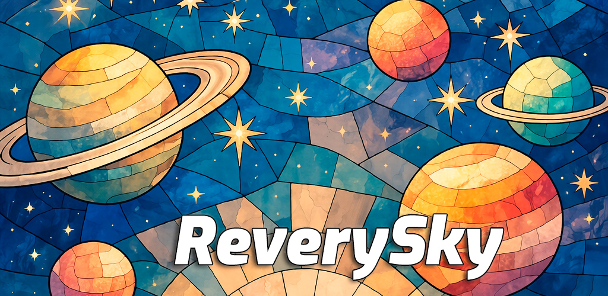
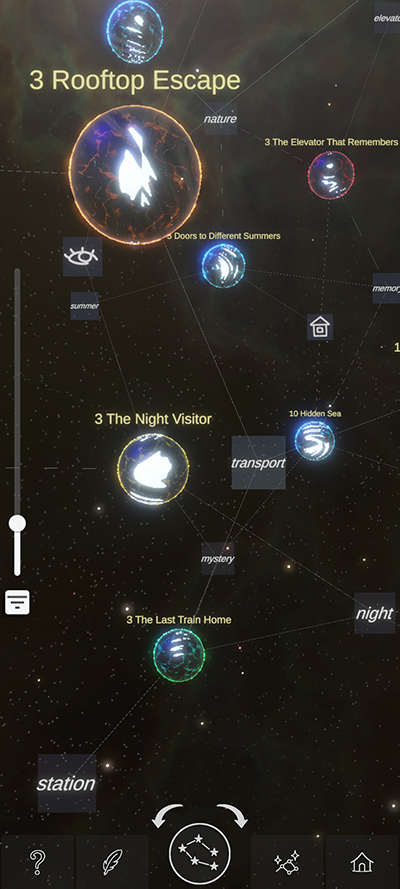
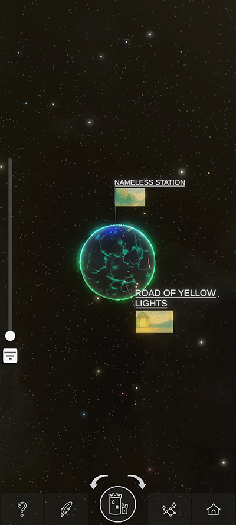
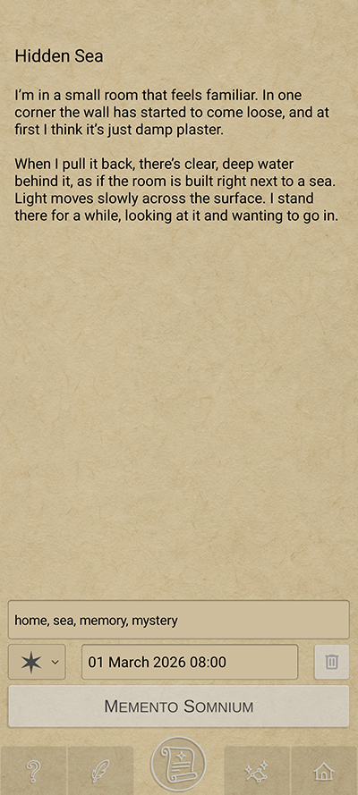
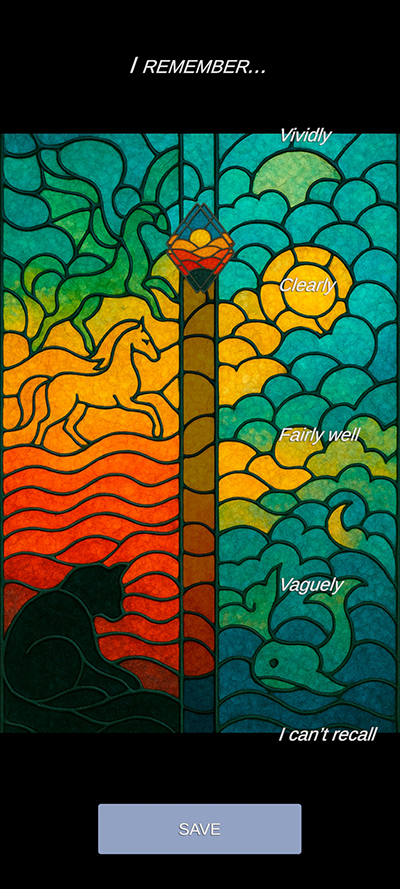
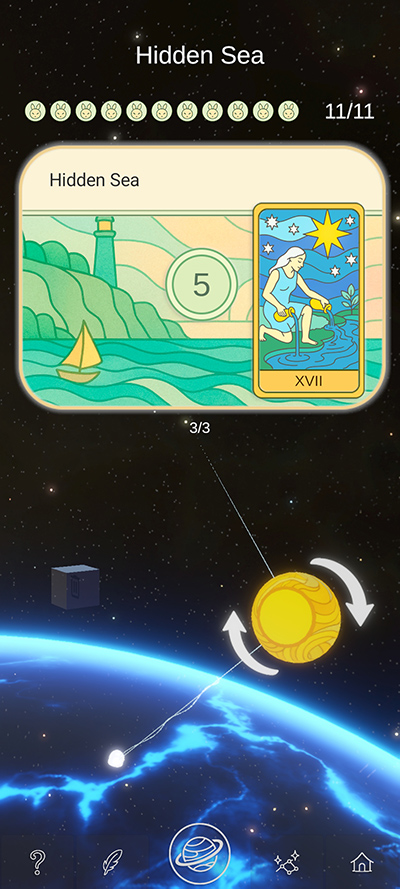
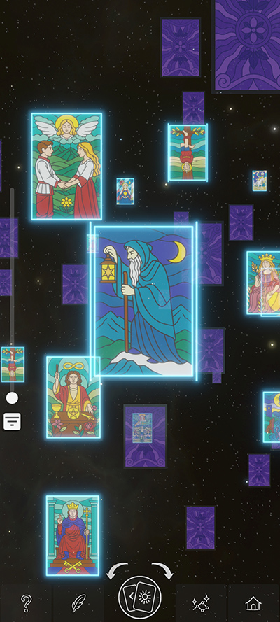
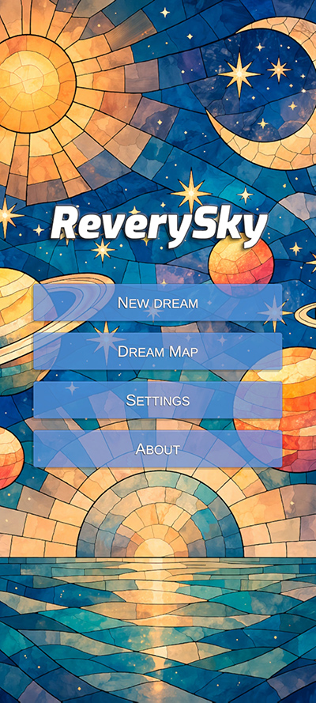

Build a Growing Universe
Save a dream after waking up and it appears as a Dream Star in your personal Star Map.
Rolling Out

ReverySky is an Android app and casual cosmic game built around dream journaling. Record dreams, grow your personal Star Map, and watch recurring patterns emerge across different nights.
Save a dream after waking up and it appears as a Dream Star in your personal Star Map.
Add title, tags, importance, and recall quality, then connect dreams through shared themes and time.
Revisit dreams later, strengthen memory, and level up each Dream Star to unlock more depth.
A quick look at ReverySky gameplay and interface.







ReverySky blends dream journaling, personal notes, and light progression into a calm, replayable loop.
As stars level up, they gain Inhabitants, Landmark-like details, and tarot-inspired Boons that add mood and identity.
Dream Stars connect through tags and time, helping clusters and recurring themes emerge naturally across your map.
Free to use, no registration, and works locally on your device. Notes stay yours as portable Markdown files, with offline access and no ads.
Ongoing updates continue refining progression, visuals, navigation, and overall polish with each new release.
ReverySky is created by MoonSkorch Studio, a solo indie developer label. The core loop is stable and ready for everyday use: record dreams, grow your Star Map, and revisit entries over time.
ReverySky is now rolling out across stores, and community feedback helps shape upcoming updates.
If ReverySky resonates with you, download it, try it, leave a review, and share your impressions in Discord.
Come say hi and help shape upcoming updates.